Working with a T3D Project
Before we move on and load a T3D project, you should familiarize yourself with the layout of the source code folders by taking the T3D Engine SDK Tour. When you are ready return here to continue.
When a new project is created it generates Visual Studio solution files (*.sln) for both VC++ 2005 and 2008. Solution files tell Visual Studio what files are in a project and how to build it so that it can be run. Solution files can be found in a folder similar to:
Torque 3D\My Projects\Project\buildFiles\VisualStudio 2008
Where <Project> is the name of the project that was created.
To create a new project, open the T3D Toolbox utility from your main Windows menu. You may also double click the icon that was created on your desktop when it was installed. After the utility open select New Project.
(click to enlarge)
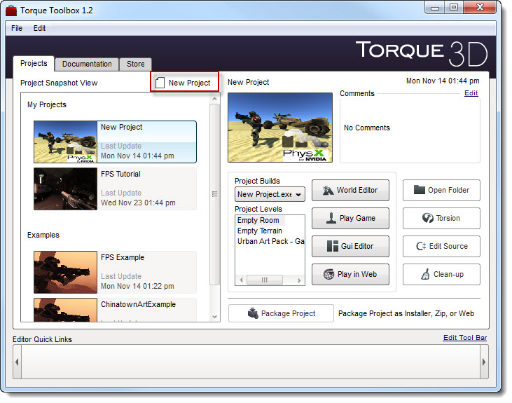
Enter a name for your project T3D_Tutorial_Project then press the Create button.
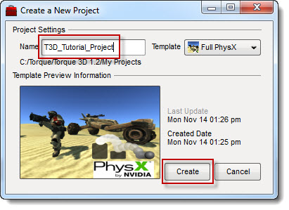
The toolbox utility will now create a new project for you.
(click to enlarge)
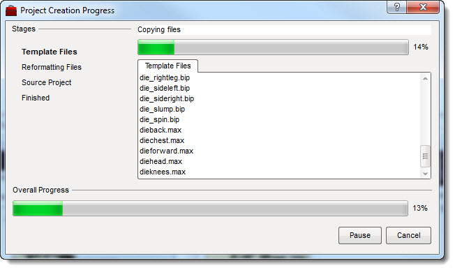
When completed press the OK button, also click the Finish
button on the Creation window.
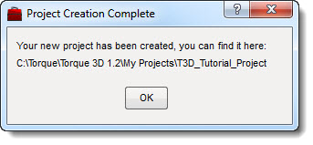
Your new Project
Open your T3D folder and look for the My Projects folder. This is where your newly created project will have been created.
(click to enlarge)
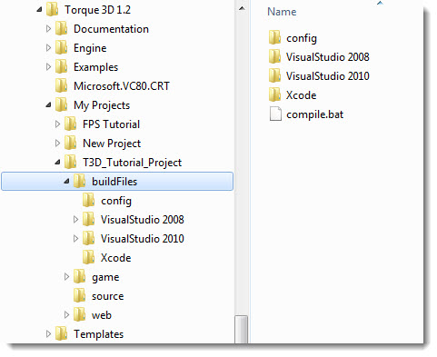
The Source code
One of the strengths of Torque 3D is that the source code for the entire engine is included with your license. For programmers or projects that are outside of the traditional box, this is an important feature. The rest of this article will walk you through creating Torque projects with Visual C++ Express.
We can open the source code via two methods -- one directly via Visual C++ Express and the other with the T3D Toolbox utility. First we will look at the traditional approach.
Method 1: Traditional Open Visual C++ if it is not already open, and then from the menu select File>Open>Project/Solution.
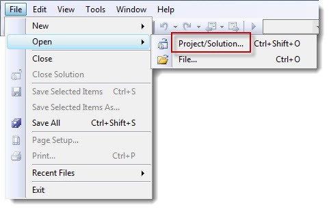
Navigate to the location where your new project has been created, and then move down into the folder appropriate for your version of Visual C++. If you kept the defaults, they should be either:
Torque 3D\My Projects\<Project>\buildFiles\VisualStudio 2005
or
Torque 3D\My Projects\<Project>\buildFiles\VisualStudio 2008
Then open the file in that folder with the .sln file extension:
<Project>.sln
Where <Project> is the name of the project you are opening.
Torque 3D Pro 1.1\My
Projects\T3D_Tutorial_Project\buildFiles\VisualStudio 2008\T3D_Tutorial_Project.sln
Method 2: The Quickest
NOTE: This method will not yet work with Visual Studio C++ 2010.
Open the Torque 3D Toolbox utility if it is not already open. From its main window with the Project tab selected, select your new project from the list, and then press the
C++ Edit Source button.
(click to enlarge)
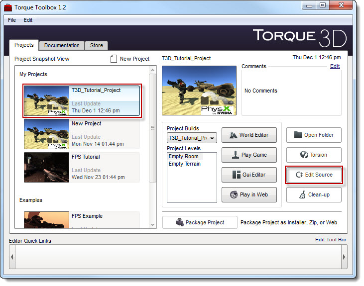
The Visual Studio Version dialog will appear. Select the version of Visual Studio that you are using from the drop down list. In this example we will use 2008.
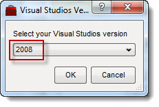
Click OK and Visual Studio 2008 should open displaying your new project. You
can press OK on the following
window, if it is still open.
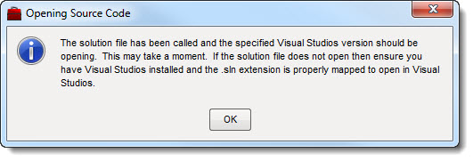
The Project
Your project should now be open inside Visual Studio 2008 and should look
something like the following:
(click to enlarge)

Look through the project folders in the tree. Look for the folder with the same name as your project but with "DLL" on the end. In the sample screen below, that would be the folder named: T3D_Tutorial_Project DLL.
This folder contains the game-related C++ files that will directly make the game function. The other projects in the solution are required by a Torque game project and are already setup to properly link to it. You do not need to work with these files in order to create a game, except in very advanced development. This information is beyond the scope of this document.
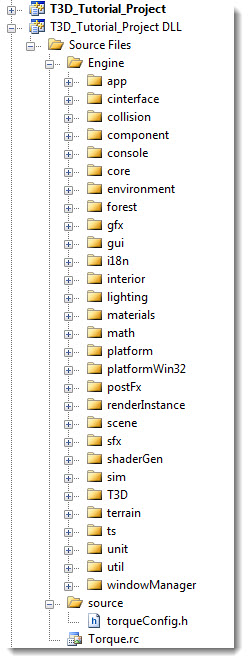
Your First Compile
There is one last thing we must do before we can start a compile.
IMPORTANT : If you are using VS C++ Express (2005, 2008, or 2010), you will not be able to compile the IE T3D plug-in project. If this is not disabled, you will get a compiler error. Everything will compile fine on the full version of Visual Studio. This warning is only for the Express version. If you are running the full version or Visual Studio and not Express, then skip ahead to the next section, The Project Build.
Otherwise continue on to disable the plugin so that you can successfully build your game project.
How to Disable the IE Plugin: Look for the folder with "Plugin" at the end of its name. In this example called: IE T3D_Tutorial_Project Plugin.
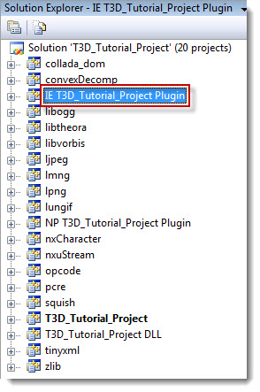
Right mouse click on the folder name and from the menu select Unload Project. This will prevent Visual Studio from including this code when the project is compiled.
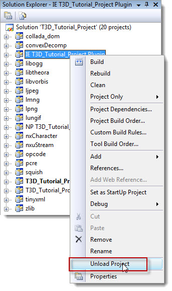
The folder should now be grayed out.
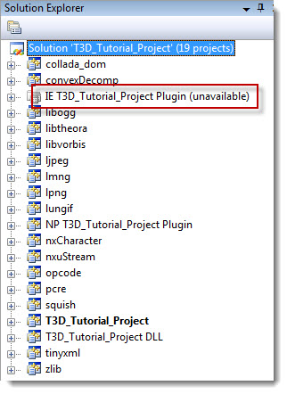
The Project Build
The process of compiling and linking a project, also known as building the project, creates the executable file for your game from the C++ source code.
To build the project, select either Release or Debug from the
Solutions Configuration drop down list on the toolbar.
A Release type build is a much lighter package as it requires none of the extra debugging information included in a debug build. As a general rule, Release builds will run faster. For more information on this subject, please refer to your compilers help documentation.
To build the solution, from the menu select Build>Build Solution or press F7.
This will start compiling the project which may take a few minutes depending on the capabilities of your computer. You can see the progress from the output window on the output tab which we opened earlier.
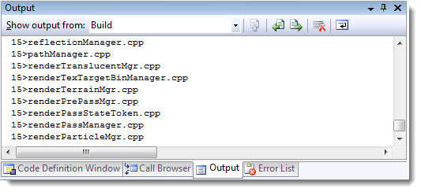
During compilation if any errors or warnings occur, you can see these from the output windows
Error List Tab which we also opened earlier.
When the compiler has completed the build and has done all the linking, the
output window
should show something similar to the following with no errors or
warnings. This is typical
of a successful clean build.
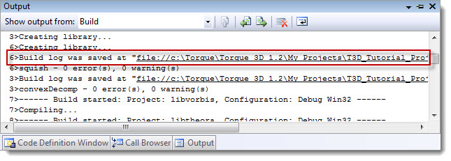
If you opted to build for a Release you can try rebuilding the
project as a Debug type.
Run your project
Now that the project has been built, you can locate the executable file inside the project folder. Again, if you used the project creation defaults it will be located in:
Torque 3D\My Projects\<Project>\game.exe
Or for a more direct way, while we have our compiler open you can just head up
to the menu and select:
Debug > Start Debugging if you made a debug build
or
Debug > Start without debugging if you made a
release build
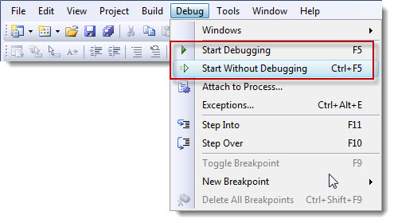
If all has gone well and you followed all the necessary steps, your project should run and be ready for you to begin your T3D development journey.
Summary
Setting up your T3D development environment and fully understanding the
folders and files can be a time-consuming process and can be quite a bewildering
experience to the newcomer. But this is time-well-spent
as you will be able to modify and compile your project engine as you see
fit.
Please read the other documentation provided to help you better
understand the World Editor/ GUI Editor
and scripting.
T3D
Documentation - The Official T3D Documentation
T3D Resources page - links to many T3D related
subjects
Visit the forums regularly as there is a wealth of community knowledge
for you to learn.
Forums - Forums on all Torque-related subjects
including a T3D Section
You can gain a lot of engine code experience by visiting the resources
section and downloading some
of the examples. By modifying the source code to include these examples,
you will learn much about
how the engine works and add new engine features.
Torque
Resources - Add on codes / scripts and other useful items
Start small and work your way through to bigger and better things. This
way you create a strong foundation
of knowledge which will support many of your future projects.
Happy game developing.
|
{kind=link}
{kind=link}
{kind=link}
{kind=link}